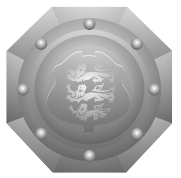
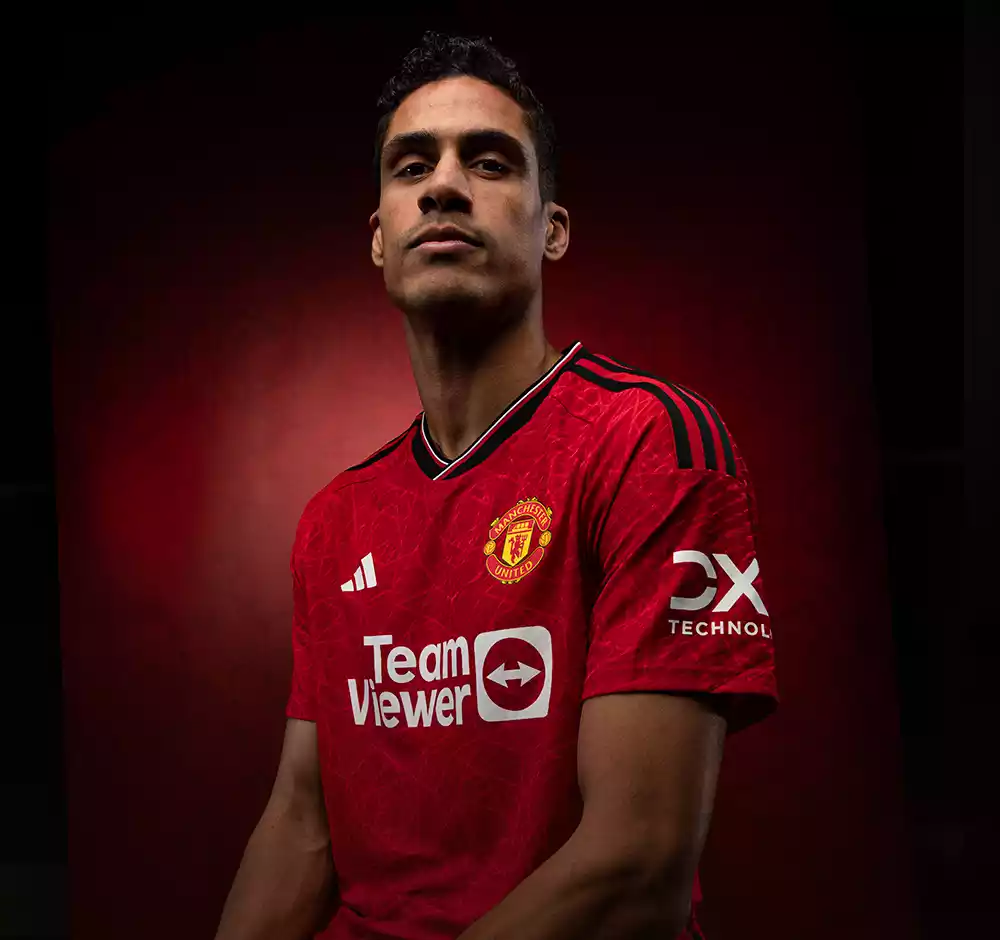

| - |
| Manchester United's story is utterly unique in sport, which is precisely |
| why the club is revered and renowned all over the world. It's a head- |
| spinning tale of triumphs and tragedy and a rich tradition of |
| attacking, entertaining football, very often resulting in the kind of |
| dramatic endings usually reserved for Hollywood blockbusters. |
| - |
| In our history section we'll lead you through our many epic successes, our darkest |
| hours overcome but never forgotten and recount the stories behind the many |
| individual legendary players, managers and teams to have served this great club |
| with honour and distinction since its foundation in 1878. |
| - |
| - |
| - |
Manchester United is one of the most successful clubs in world football,
with a glittering history of winning silverware in English, European and global competitions.
| 20 LEAGUE TITLES 1907/08, 1910/11, 1951/52, 1955/56, 1956/57, 1964/65, 1966/67, 1992/93, 1993/94, 1995/96, 1996/97, 1998/99, 1999/20, 2000/01, 2002/03, 2006/07, 2007/08, 2008/09 2010/11, 2012/13 |
| 3 UEFA CHAMPIONS LEAGUE 1967/68, 1998/99, 2007/08 |
 | 12 FA CUP 1908/09, 1947/48, 1962/63, 1976/77, 1982/83, 1984/85, 1989/90, 1993/94, 1995/96, 1998/99, 2003/04, 2015/2016 |
 | 6 LEAGUE CUP 1991/92, 2005/06, 2008/09, 2009/10, 2016/17, 2022/23 |
|  | 21 FA COMMUNITY SHIELD 1908, 1911, 1952, 1956, 1957, 1965, 1967, 1977, 1983,1990, 1993, 1994, 1996, 1997, 2003, 2007, 2008, 2010, 2011, 2013, 2016 |
 | 1 UEFA EUROPA LEAGUE 2016/17 |
| 1 UEFA SUPER CUP 1991 |
| 1 FIFA CLUB WORLD CUP 2008 |
 #1 ALTAY BAYINDIR |
 #22 TOM HEATON |
#24 ANDRE ONANA |
 #2 VICTOR LINDELOF |
 #5 HARRY MAGUIRE |
 #19 RAPHAEL VARANE |
 #6 LISANDRO MARTINEZ |
 #35 JONNY EVANS |
 #20 DIOGO DALOT |
 #23 LUKE SHAW |
#12 TYRELL MALACIA |
 #29 AARON WAN-BISSAKA |
 #53 WILLY KAMBWALA |
 #4 SOFYAN AMRABAT |
 #7 MASON MOUNT |
 #8 BRUNO FERNANDES |
 #14 CRISTIAN ERIKSEN |
#16 AMAD DIALLO |
 #18 CASEMIRO |
 #28 FACUNDO PELLISTRI |
 #37 KOBBIE MAINOO |
 #39 SCOTT MCTOMINAY |
 #9 ANTHONY MARTIAL |
 #10 MARCUS RASHFORD |
 #11 RASMUS HOJLUND |
 #17 ALEJANDRO GARNACHO |
 #21 ANTONY |
 #47 SHOLA SHORETIRE |
Sun 28 Jan | English FA CUP | Newport C vs Man Utd
Fri 02 Feb | English Premier League | Wolves vs Man Utd
Sun 04 Feb | English Premier League | Man Utd vs West Ham
Sun 11 Feb | English Premier League | Aston Villa vs Man Utd
Sun 18 Feb | English Premier League | Luton vs Man Utd
Sat 24 Feb | English Premier League | Man Utd vs Fulham
Sun 03 Mar | English Premier League | Man City vs Man Utd
Sat 09 Mar | English Premier League | Man Utd vs Everton
Sat 16 Mar | English Premier League | Man Utd vs Sheff Utd
Sat 30 Mar | English Premier League | Brentford vs Man Utd
Thu 04 Apr | English Premier League | Chelsea vs Man Utd
Sat 06 Apr | English Premier League | Man Utd vs Liverpool
Sat 13 Apr | English Premier League | Bournemouth vs Man Utd
Sat 20 Apr | English Premier League | Man Utd vs Newcastle
Sat 27 Apr | English Premier League | Man Utd vs Burnley
Sat 04 May | English Premier League | Crystal Palace vs Man Utd
Sat 11 May | English Premier League | Man Utd vs Arsenal
Sun 19 May | English Premier League | Brighton vs Man Utd
Nama : Sandika Nur Rizki Sendi
NIM : 10123129
Kelas : IF 4